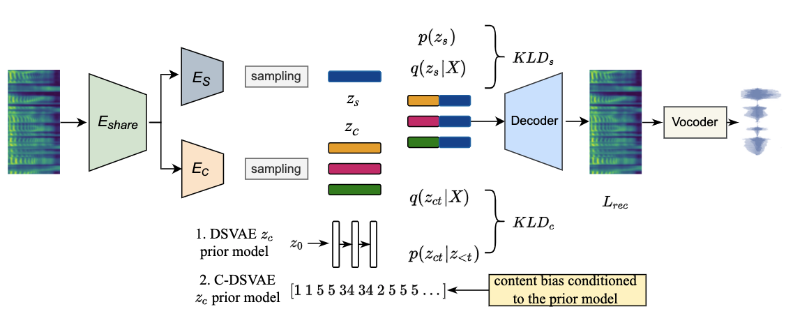

Towards Improved Zero-shot Voice Conversion with Conditional DSVAE
Jiachen Lian12*, Chunlei Zhang2*, Gopala Krishna Anumanchipalli, Dong Yu2
1 Berkeley EECS, CA
2 Tencent AI Lab, Bellevue, WA
* Equal Contribution

Disentangling content and speaking style information is essential for zero-shot non-parallel voice conversion (VC). Our previous study investigated a novel framework with disentangled sequential variational autoencoder (DSVAE) as the backbone for information decomposition. We have demonstrated that simultaneous disentangling
content embedding and speaker embedding from one utterance is feasible for zero-shot VC. In this study, we continue the direction by raising one concern about the prior distribution of content branch in the DSVAE baseline. We find the random initialized prior distribution will force the content embedding to reduce the phonetic-structure information during the learning process, which is not a desired property. Here, we seek to achieve a better content embedding with more phonetic information preserved. We propose conditional DSVAE, a new model that enables content bias as a condition to the prior modeling and reshapes the content embedding sampled from the posterior distribution. In our experiment on the VCTK dataset, we demonstrate that content embeddings derived from the conditional DSVAE overcome the randomness and achieve a much better phoneme classification accuracy, a stabilized vocalization and a better zero-shot VC performance compared with the competitive DSVAE baseline.
Comments for Zero-Shot VC
- 1. No speaker labels used. No Pre-trained speaker embeddings used. Non-parallel training.
- 2. Only unseen-to-unseen conversion samples are given.
- 3. Refer to the previous work https://jlian2.github.io/Robust-Voice-Style-Transfer/ for the baseline demo